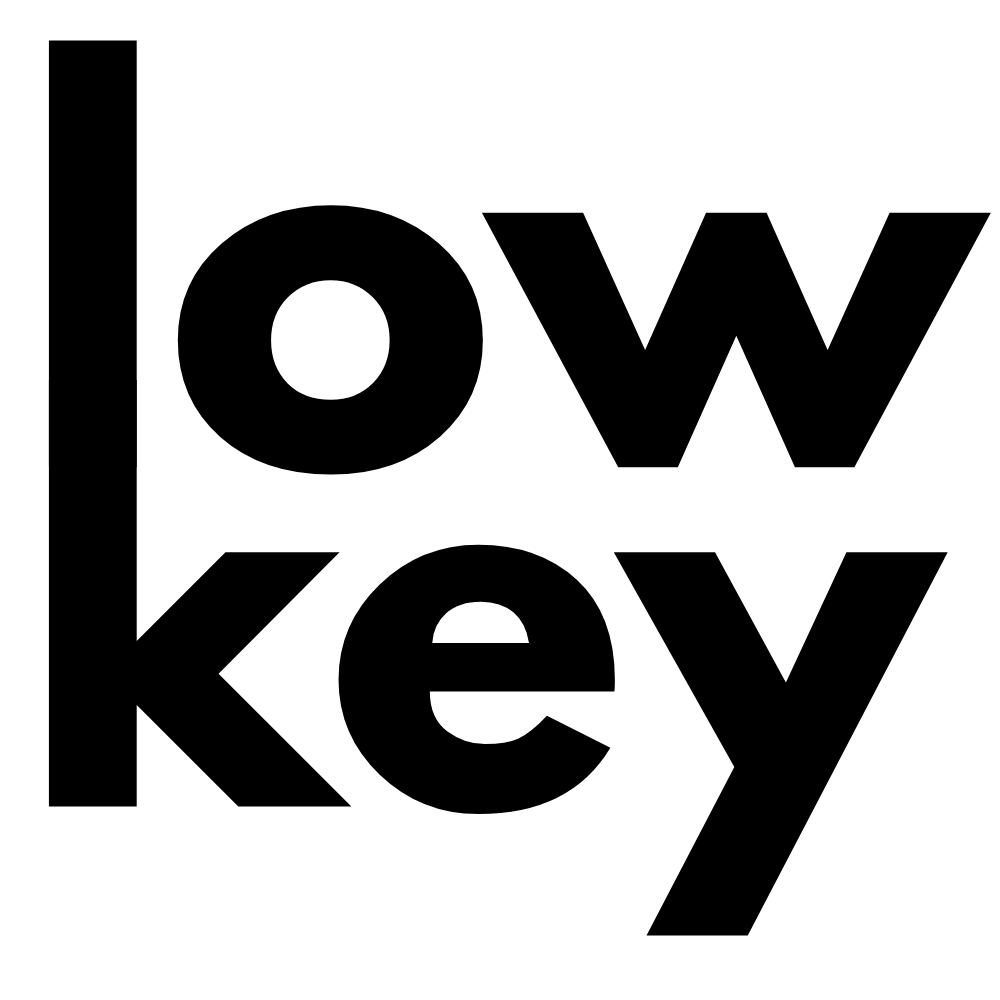
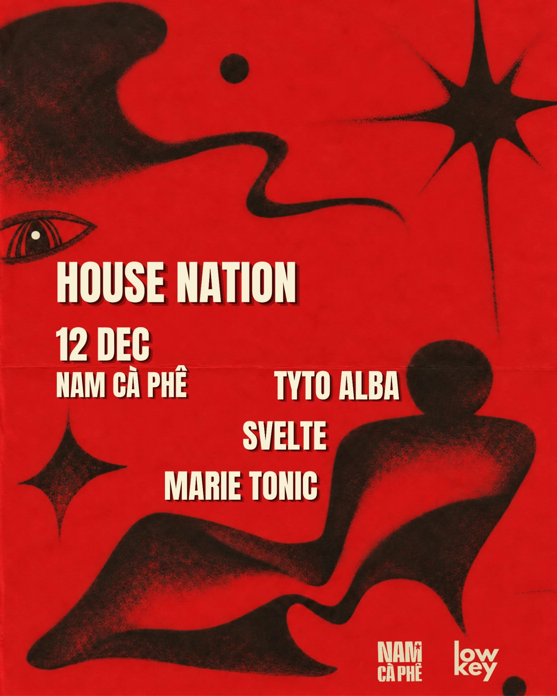

looks like we're not done with 2026 just yet
on sat 12 dec at nam cà phê we're back for the last one of 26 and our last one at this spot, before we take low key into new spaces in 2027.
we’re calling this one house nation. a night dedicated to house music, with three selectors bringing their own take on the sound.
marie tonic, resident at nancy's l’ostra club, blends house with electro and breaks. tyto alba, the OG selector from metz, brings his funk and boogie roots with progressive sounds, and our resident svelte brings the swing of ’90s uk club music.
12 dec (sat) · nam cà phê · 21h - 27h
19 rue des bains, luxembourg · limited capacity event
one last dance together before we call it a year. see you on the floor,
low key xx